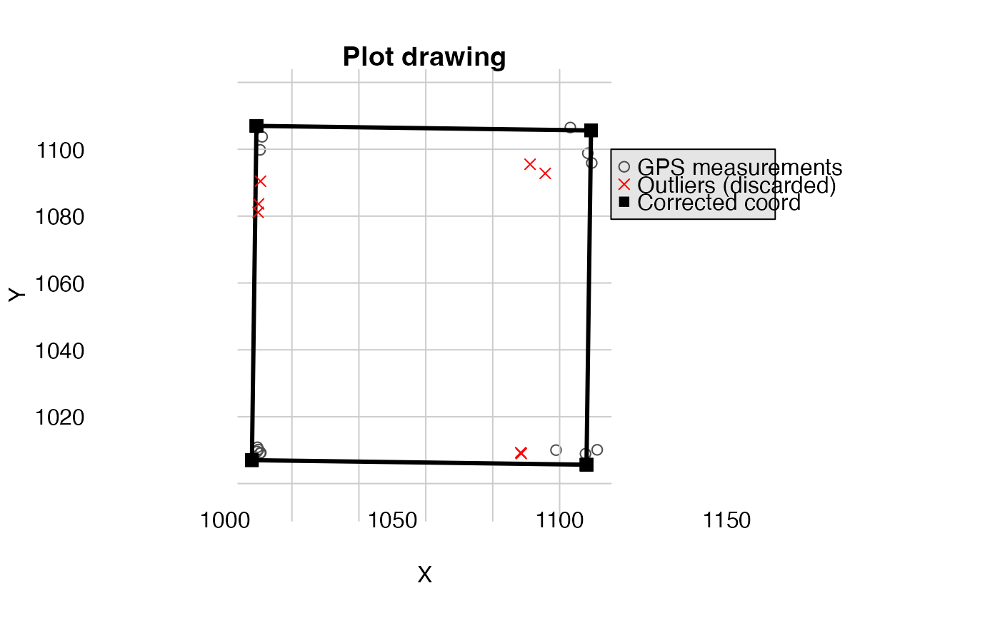

This function builds the most probable GPS coordinates of the plot corners from multiple GPS measurements.
Usage
correctCoordGPS(
longlat = NULL,
projCoord = NULL,
coordRel,
rangeX,
rangeY,
maxDist = 15,
drawPlot = FALSE,
rmOutliers = TRUE
)Arguments
- longlat
(optional) data frame with the coordinate in longitude latitude (eg. cbind(longitude, latitude)).
- projCoord
(optional) data frame with the projected coordinate in X Y
- coordRel
data frame with the relative coordinate in the same order than the longlat or projCoord
- rangeX
a vector of length 2 giving the range for plot relative X coordinates
- rangeY
a vector of length 2 giving the range for plot relative Y coordinates
- maxDist
a numeric giving the maximum distance above which GPS measurements should be considered as outliers (by default 15 m)
- drawPlot
a logical if you want to display a graphical representation
- rmOutliers
a logical if you want to remove the outliers from coordinates calculation
Value
If there are no outliers or rmOutliers = TRUE, a list with:
cornerCoords: a data.frame with the coordinates of the cornerscorrectedCoord: a data.frame with the adjusted coordinates given as inputpolygon: a spatial polygonoutliers: index of coordinates lines considered as outliers, if anycodeUTM: the UTM code of the coordinates if the parameterlonglatis set
Details
GPS coordinates should be either given in longitude latitude (longlat) or in projected coordinates (projCoord)
Examples
projCoord <- data.frame(
X = c(
runif(5, min = 9, max = 11), runif(5, min = 8, max = 12),
runif(5, min = 80, max = 120), runif(5, min = 90, max = 110)
),
Y = c(
runif(5, min = 9, max = 11), runif(5, min = 80, max = 120),
runif(5, min = 8, max = 12), runif(5, min = 90, max = 110)
)
)
projCoord <- projCoord + 1000
coordRel <- data.frame(
X = c(rep(0, 10), rep(100, 10)),
Y = c(rep(c(rep(0, 5), rep(100, 5)), 2))
)
aa <- correctCoordGPS(
projCoord = projCoord, coordRel = coordRel,
rangeX = c(0, 100), rangeY = c(0, 100)
)
#> Warning: longer object length is not a multiple of shorter object length
bb <- correctCoordGPS(
projCoord = projCoord, coordRel = coordRel,
rangeX = c(0, 100), rangeY = c(0, 100), rmOutliers = TRUE
)
#> Warning: longer object length is not a multiple of shorter object length
#> Warning: calling par(new=TRUE) with no plot
# \donttest{
correctCoordGPS(
projCoord = projCoord, coordRel = coordRel,
rangeX = c(0, 100), rangeY = c(0, 100), drawPlot = TRUE
)
#> Warning: longer object length is not a multiple of shorter object length
#> $cornerCoords
#> X Y
#> 1 1004.260 1008.395
#> 2 1104.212 1005.311
#> 3 1107.297 1105.263
#> 4 1007.344 1108.348
#>
#> $correctedCoord
#> X Y
#> 1 1004.260 1008.395
#> 2 1004.260 1008.395
#> 3 1004.260 1008.395
#> 4 1004.260 1008.395
#> 5 1004.260 1008.395
#> 6 1007.344 1108.348
#> 7 1007.344 1108.348
#> 8 1007.344 1108.348
#> 9 1007.344 1108.348
#> 10 1007.344 1108.348
#> 11 1104.212 1005.311
#> 12 1104.212 1005.311
#> 13 1104.212 1005.311
#> 14 1104.212 1005.311
#> 15 1104.212 1005.311
#> 16 1107.297 1105.263
#> 17 1107.297 1105.263
#> 18 1107.297 1105.263
#> 19 1107.297 1105.263
#> 20 1107.297 1105.263
#>
#> $polygon
#> Geometry set for 1 feature
#> Geometry type: POLYGON
#> Dimension: XY
#> Bounding box: xmin: 1004.26 ymin: 1005.311 xmax: 1107.297 ymax: 1108.348
#> CRS: NA
#> POLYGON ((1004.26 1008.395, 1104.212 1005.311, ...
#>
#> $outliers
#> [1] 9 10 11 15 19
#>
# }
